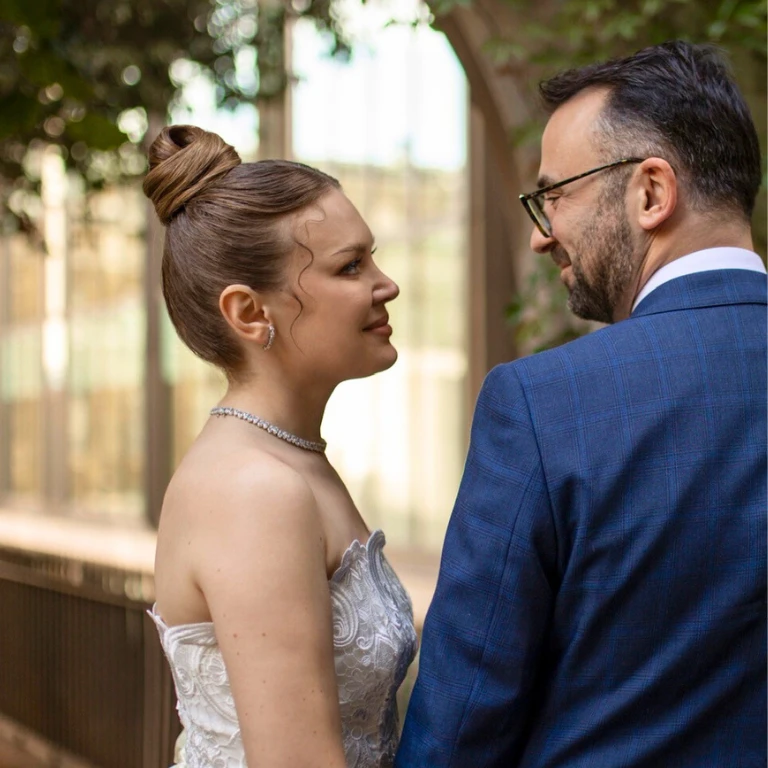

Wedding Hair Extensions
The most photographed day of your life deserves hair you love.
- 3 hoursReady as little as 3 hours before
- Every styleCurls, updos, waves and braids
- Reusable for yearsClip ins outlast the big day
- 100% Russian hairColour matched without dye
Bridal hair
The Secret to Flawless Bridal Styles
Your wedding day is one of the most photographed moments of your life, and every detail matters, especially your hair. Many brides dream of voluminous curls, elegant updos or flowing waves, but not everyone has the natural length or thickness to achieve those looks. This is where hair extensions make all the difference.
Brides turn to extensions for three reasons. Length, for styles that require more hair than you naturally have. Volume, to create fullness in curls, waves or updos. And versatility, because extensions give your stylist more to work with, opening up a far wider range of styles. Extensions do not just enhance how your hair looks in person, they ensure it photographs beautifully from every angle.
Which method
The Right Extensions for Your Wedding
Clip In Extensions, for a one day transformation
Clip ins are a favourite for brides who want a one day transformation. They are applied and removed in minutes, giving you instant length and volume with no long term commitment. They are also perfect for honeymoon styling, you can take them with you and reuse them whenever you like. Discover clip ins.
Micro Rings or Micro Bonds, for the pre wedding routine
If you want extensions as part of your pre wedding beauty routine, fitted methods are ideal. Applied weeks in advance, they let you wear and test your chosen style before the big day. They are secure, discreet and blend seamlessly, so you feel confident from the rehearsal dinner to the honeymoon. Discover micro rings or micro bonds.
Hand Tied Wefts, for dramatic volume
Wefts are ideal for brides with medium to thick hair who want fuller, longer locks. Attached with micro rings, they sit flat against the scalp and provide plenty of hair for dramatic curls or waves. Discover wefts.
Toppers and Wigs, for thinning hair
For brides with thinning hair or hair loss, toppers and wigs offer natural looking coverage and confidence. Crafted from the same Russian hair, they look completely realistic while allowing for beautiful bridal styling. Discover toppers and medical wigs.
Braids and Ponytails, for the reception change
A clip in braid or ponytail is a beautiful way to change your look between the ceremony and the reception in seconds, and a favourite for outdoor weddings. Discover braids and ponytails.
Timing is everything
From First Fitting to First Dance
If you are considering fitted extensions, we recommend booking your fitting at least a few weeks before the wedding. This allows time for a trial hairstyle and ensures you feel completely comfortable with your new look. Clip ins can be purchased closer to the day, but should still be matched in advance to ensure a perfect colour blend.
And if time is short, a visit to us can be done as little as 3 hours before the start of your big day, so as you walk down the aisle you will have the confidence of knowing all eyes are fixated on you.
Client reviews
Brides Who Said Yes to the Hair Too
Had extensions for the first time for my wedding. Could not recommend Tatiana Karelina enough. My hair is naturally wavy and curly, which they matched so that I do not have to straighten it the whole time. Have had so many comments about my hair and how lovely it looks and how natural it is.
Ruth Morgan
I have had a wonderful experience at Tatiana Karelina. The staff are so friendly, professional and knowledgeable, making me feel very welcome. I had tape extensions put in for my wedding and the outcome was incredible. Thick, luscious hair. I could not recommend the salon more highly.
Claudia Roden
Amazing hair extensions, thank you so much. The colour matching was perfect, it is so quick, but most of all you cannot feel them at all when you touch your hair. An absolute game changer, and the salon is so beautiful, super friendly and extremely professional. Would highly recommend.
Angelin Ober
Everything you want to know
Frequently Asked Questions
Why do brides choose Tatiana Karelina for wedding hair extensions?
Your wedding day is one of the most photographed moments of your life, and our bespoke Russian hair extensions are designed to look natural from every angle. We blend hair from several ponytails to achieve a perfect, multi tonal colour match, we match texture as well as colour, and our stylists cut and style the extensions to integrate perfectly with your own hair. The result is hair that looks fuller, longer and completely natural in person and in photographs.
When should I book my wedding hair extensions?
For fitted methods such as micro rings or micro bonds, we recommend booking your fitting at least a few weeks before the wedding, so there is time for a trial hairstyle and you feel completely comfortable with your new look. Clip ins can be purchased closer to the day, but should still be colour matched in advance. A visit can be done as little as 3 hours before the start of your big day.
Should I choose clip ins or fitted extensions for my wedding?
Clip ins are perfect for a one day transformation. They are applied and removed in minutes, give instant length and volume with no long term commitment, and can be reused for years and taken on honeymoon. Fitted methods such as micro rings or micro bonds are ideal if you want extensions as part of your pre wedding routine, letting you wear and test your chosen style before the big day.
Will extensions hold an updo or bridal style?
Yes. Extensions give your stylist more hair to work with, which opens up a far wider range of styles, from voluminous curls and romantic waves to sleek chignons and dramatic braids. Hand tied wefts sit flat against the scalp and provide plenty of hair for dramatic styles, while micro rings and bonds are discreet enough to wear up.
What happens to my extensions after the wedding?
With the right aftercare, extensions last well beyond the celebration. Fitted methods can be maintained for months, giving you flawless hair through the honeymoon and beyond. Clip ins, toppers and wigs can be reused for years, and we provide every bride with detailed aftercare guidance.
Say Yes to the Hair Too
Book a free bridal consultation in our London or Manchester salon, or by video call, and let us match your colour and texture perfectly before your big day. Whether you choose clip ins for a one day transformation or fitted extensions for a seamless pre wedding routine, your hair will look natural, voluminous and absolutely stunning.